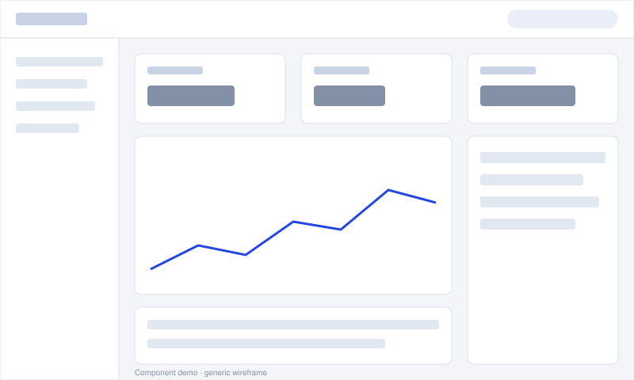
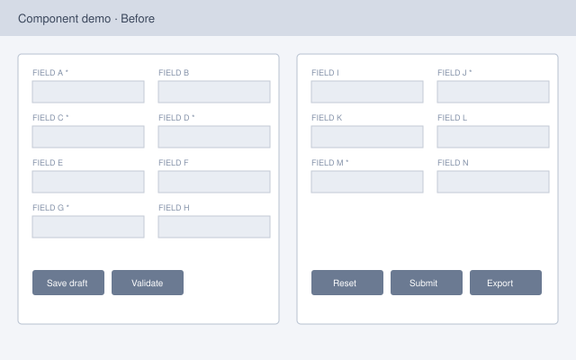
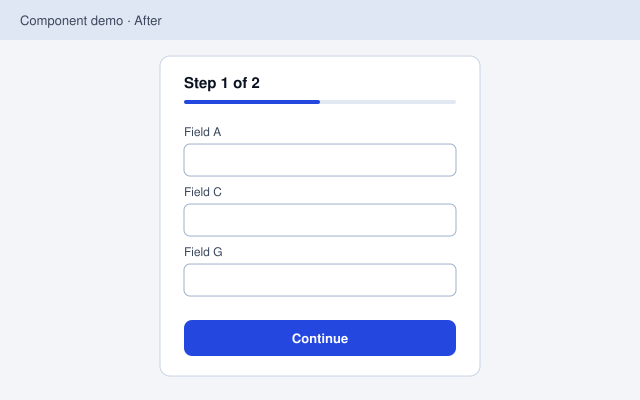

Kicker
Raised tile
Lifts on hover. Use for content cards.
Design System
Tokens and components rendered live from css/styles.css, with usage notes. Sample content on this page is a component demo, not my work.
Rules the code already enforces: one source of truth per token (each color is written once with light-dark()); every component is complete without JavaScript; motion is off under reduced-motion; no third-party requests except the GitHub API on Portfolio and the draw.io viewer on pages with diagrams.
Both themes rendered side by side from the same tokens. Each panel sets its own color-scheme, so light-dark() resolves per panel. Values and contrast ratios are computed in your browser.
| Pair | Ratio | WCAG |
|---|
| Pair | Ratio | WCAG |
|---|
Usage: components use semantic tokens only (--color-surface, --color-text-muted), never hex values, so they theme automatically. Accent 2 (teal) and accent 3 (violet) are for gradients and decoration, not body text. With JavaScript off, the swatches and ratios don't render; the tokens are listed at the top of styles.css.
System font stack, modular scale of about 1.25. Headings tighten letter-spacing as they grow. Prose is capped at 70ch.
--text-3xlPlatform strategy--text-2xlPlatform strategy--text-xlPlatform strategy--text-lgPlatform strategy--text-mdPlatform strategy for regulated industries--text-basePlatform strategy for regulated industries--text-smPlatform strategy for regulated industries--text-xsPlatform strategy for regulated industries--font-mono~15M 2,000+ $1.1MUsage: one h1 per page. h1 and h2 scale fluidly with the viewport between their mobile and desktop sizes. Use .eyebrow for the small uppercase label above a heading.
A 4px base. Sections use --space-7 to --space-8; grids use --space-5.
--space-1--space-2--space-3--space-4--space-5--space-6--space-7--space-8--space-9Three surface recipes carry the glossy, layered look. Each combines a base gradient, a top sheen, a translucent bevel edge, and layered shadows.
Usage: backdrop blur is the one expensive effect, so it is limited to the nav dock and the profile card. On screens wider than 760px, cards and tiles turn to frosted glass so the background drawings blur behind them; on phones, and when reduced transparency is requested, they stay opaque. Print flattens all surfaces.
Usage: generic, unbranded toy bricks with plain studs, drawn in the site's 30° projection with random lengths (1×1 to 2×8) and heights (thin plates and full bricks). Each scene is an SVG mask in the stylesheet, colored by --brick-line: neutral gray in light mode, faint tactical blue in dark. Hidden lines are removed. Scenes rotate by section and sit on the right, away from left-aligned text; a faint stud lattice covers the top of every page. They are hidden on the Resume page, in print, and under reduced transparency. The favicon is a 2×2 brick whose outline switches between dark and light with the browser theme.
Tactile push buttons: a key cap on a thick base. Hover raises the cap; pressing drives it into the base.
Usage: one primary button per view. Links styled as buttons navigate; real <button> elements act. The theme switch in the header is a role="switch" button with aria-checked; its knob position comes from data-theme on <html>, so it is right on first paint.
The bento grid is 6 columns on desktop, 2 on tablet, 1 on mobile. Tiles span 2, 3, 4, or 6 columns.
Kicker
Lifts on hover. Use for content cards.
Kicker
Recessed well. Use to hold an illustration or instrument.
Tags
Tags label stack and focus areas.
Callout. For a note the reader must not miss, like the independent-analysis label on case studies.
Component demo · sample data
Demo metric A
+12% vs last quarterDemo metric B
| Week | Value |
|---|---|
| W1 | 30 |
| W2 | 33 |
| W3 | 31 |
| W4 | 35 |
| W5 | 38 |
| W6 | 37 |
| W7 | 40 |
| W8 | 42 |
Demo metric C
Usage: the final value is written in the HTML; data-counter animates up to it once on first view, and never under reduced motion. Only real, sourced numbers go in production stat cards.
Component demo · sample data
Usage: the screen stays dark in both themes, like hardware. Every readout names its source. Used once, on Home.
Component demo · sample data
Short description of what happened.
Short description of what happened.
Short description of what happened.
Component demo · sample data
| Item | Owner | Status |
|---|---|---|
| Demo item A | Team one | In progress |
| Demo item B | Team two | Done |
| Demo item C | Team one | Not started |
Component demo · sample data
| Capability | Option A | Option B | Option C |
|---|---|---|---|
| Capability one | Yes | Partial | No |
| Capability two | Yes | Yes | Partial |
| Relative cost | Low | Medium | High |
Usage: every mark pairs an icon with a word, never color alone. The wrapper scrolls horizontally on narrow screens.
Component demo · sample data
Usage: an ordered list, so the sequence survives without CSS. Horizontal on wide screens, vertical below 760px.
Component demo · sample data
Usage: mark finished steps with .is-done and the current one with aria-current="step". State is shown by shape and a check mark as well as color.
Component demo · sample data
Usage: Now / Next / Later rather than dates, so the roadmap states intent without false precision. Lane markers are filled, half-filled, and empty.
Component demo · sample data
Usage: place items with --x and --y (0–100). Each item carries its quadrant in text for screen readers. Keep it to about six items so labels don't collide on phones.
Bar, line, and sparkline, drawn as SVG from a data table. The table stays on the page as the accessible view.
Component demo · sample data
| Quarter | Requests (K) |
|---|---|
| Q1 | 12 |
| Q2 | 18 |
| Q3 | 15 |
| Q4 | 24 |
| Week | Adoption (%) |
|---|---|
| W1 | 8 |
| W2 | 11 |
| W3 | 10 |
| W4 | 15 |
| W5 | 19 |
| W6 | 22 |
| W7 | 21 |
| W8 | 27 |
Usage: one series, in the accent color; text stays in text tokens. Bars are capped at 24px with a 4px rounded end; lines are 2px with an end dot. Hover shows a tooltip; focus the chart and use the arrow keys to read values. Without JavaScript, the table shows instead.
Component demo · generic wireframe

A header bar runs across the top with a search field on the right. A left sidebar holds four navigation items. The main area has three metric cards in a row, a line chart below them that trends upward, a list panel on the right, and a table at the bottom.
Component demo · generic wireframes


Usage: without JavaScript the two images sit side by side with captions. With it they stack, and a range input reveals the after image; it works with a mouse, touch, or the arrow keys. Use two images of the same size.
Component demo · generic wireframe
Usage: markers are links to their notes, so they work without JavaScript. Position them with --x and --y as percentages of the image. Hover or focus highlights the matching pair.
One projection everywhere: true isometric with 30° axes, screenX = (x − y)·cos30°, screenY = (x + y)·sin30° − z. Faces read --iso-* tokens, so shading follows the theme.
Usage: the accent face marks the one element that matters. Text never goes inside a skewed shape: shapes carry upright number badges, and HTML text beside them carries the words.
Component demo · sample layers
Usage: write an ordered list with the base layer first, and data-iso-arch draws the stack beside it. Add data-accent to one item to choose the accent layer (the top one by default). Hover or keyboard focus on a list item highlights its layer. Without JavaScript, the list is the figure.
Used once, on Home: a hand-placed stack whose legend buttons are the keyboard targets. Selecting a layer lifts it, dims the others with a filter (not opacity, which would make upper layers see-through), and writes its description to a live caption. Under reduced motion the stack is static and fully readable.
Detailed diagrams are authored in draw.io and committed as a pair: an editable .drawio and a static .svg. The static SVG is the page default; the live viewer is an upgrade.
Component demo · neutral sample diagram

A request is received and its input is validated. A decision checks whether the input is valid. If it is not, the flow returns an error and nothing is stored. If it is, the request is processed, the result is stored, and the user is notified. A second layer, Annotations, labels the diagram as a component demo and notes that failed checks store nothing.
Component demo · what readers see if the viewer can't load
data-drawio: static SVG only.Loading. visuals.js does nothing, and makes no request, unless the page has a figure[data-drawio]. When the first one comes within about 200px of the viewport, it loads the viewer once from viewer.diagrams.net, resolves the diagram path with new URL(path, document.baseURI) so it works under the /shafibabar/ subpath, and mounts the viewer inline (not an iframe) with zoom, layers, and lightbox, and editing off. It skips the upgrade when Data Saver is on. If the viewer is blocked, errors, or takes more than 6 seconds, the static SVG stays, silently.
Theming. draw.io output ignores site themes, so the canvas keeps a fixed white background with a subtle border in both light and dark mode.
Accessibility. The viewer isn't reliably screen-reader friendly, so every diagram has a caption and a text description that states its full meaning in prose.
Print. Print always shows the static SVG and hides the viewer.
Where allowed. Case study entries, Case Studies, Design, and this page. Never Home, Resume, or Portfolio. Authoring rules are in assets/diagrams/README.md.
.reveal): a short fade-and-rise on first view. Content is only hidden once the page knows JavaScript is running..tilt-card + data-tilt): the Home profile card and the brick cards in the page headers. They follow a mouse or pen, up to 7°, with layers at different depths and a moving sheen. In the brick cards the baseplate, the structure, and one hovering brick sit on separate layers, each scaled so they line up at rest and separate as the card tilts. Off on touch and under reduced motion.data-counter): once per load, ending on the exact text written in the HTML.